12 free games that run right in your browser, on a phone or a computer, with touch, a keyboard or a game controller. Tap one to play. Tip: on a phone, use “Add to Home Screen” to keep your favourite like an app.
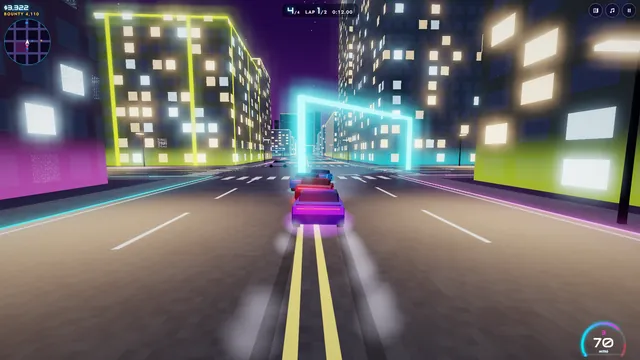
Street racer · 3DNew
Redline Nights
Free-roam a neon city at night in eight original cars. Win sprints, circuits, drift battles and speed traps, then run from the police when your heat climbs: roadblocks, spike strips and a helicopter. Beat the Redline Ten one by one to win their cars.
Drag or tilt your phone to steer, or use a keyboard or controller.
Play
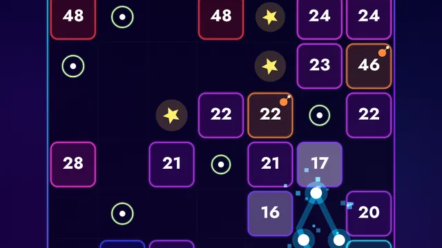
Block breakerNew
Prism Breaker
Fire a stream of light at numbered blocks and break them before they cross the line. Lasers zap whole rows, prisms split your balls, bombs blast everything around them. Stars buy new ball colours.
Drag to aim, let go to fire.
Play
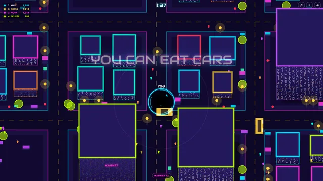
City swallowerNew
Void Eater
Start as a tiny void and swallow cones, cars, buses, then whole buildings and the spire. Two-minute battles against three rival voids, or eat the city solo.
Drag to move.
Play
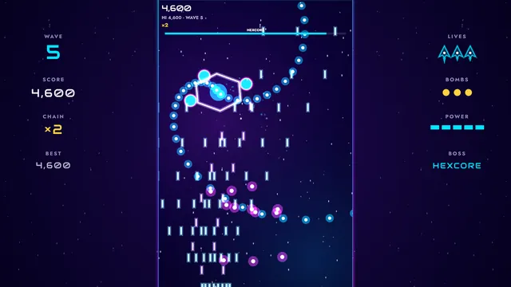
Space shooterNew
Nova Strike
Hold the line against waves of invaders. Power your guns up to a five-way spread, add lasers and homing missiles, and take down three giant bosses, each with three phases.
Drag to fly. Your guns fire on their own.
Play
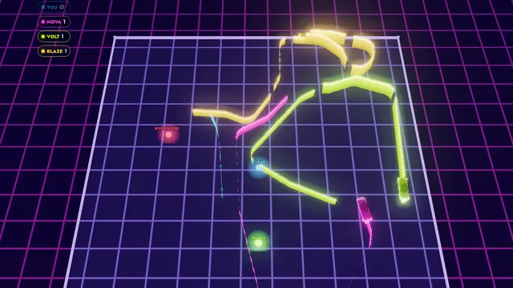
Light-trail arenaNew
Glowline
Four riders leave glowing trails in one arena. Curve, cut them off and don't touch the light. Orbs help you or wreck everyone else. Play three AI rivals, or a friend on one keyboard.
Hold left or right to curve.
Play
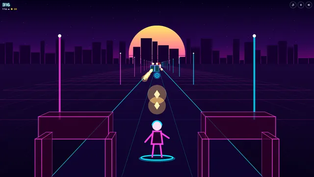
Endless runner · 3DNew
Pulse Runner
Your robot runner dodges, jumps and slides down an endless neon highway in 3D. Run up ramps onto the trains, grab orbs, and fly over it all with the jetpack. Missions pay orbs; spend them to make power-ups last longer.
Swipe to change lanes, jump and slide.
Play
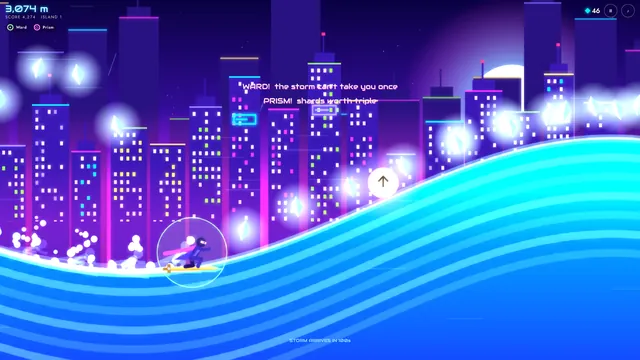
Hill riderSandblade
Dive down neon hills, launch off giant ramps from island to island, each in its own colours, and outrun the storm. 11 power-ups, now with Comet, Starfall, Flow and Echo.
Hold to dive, let go to fly.
Play
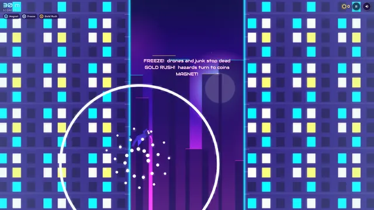
Wall climberSkyline Leap
Run up between two towers, leap wall to wall, dodge window hazards and smash drones mid-air. New power-ups, and a Christmas version with snow, lights and reindeer drones.
Tap to leap.
Play
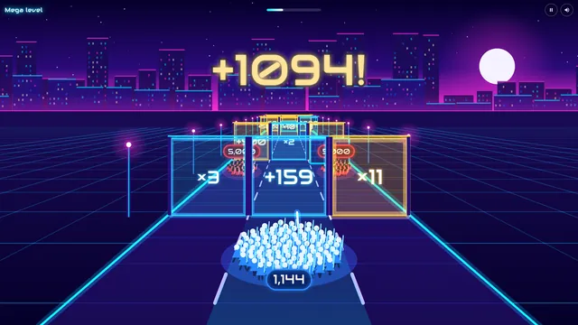
Crowd runnerSandblade Legion
Steer your legion down a neon road through multiplier gates, blast through walls to the big bonus, then charge the horde. Every fight is one for one, so only the bigger army wins. New colours every level.
Tap or swipe to change lanes.
Play
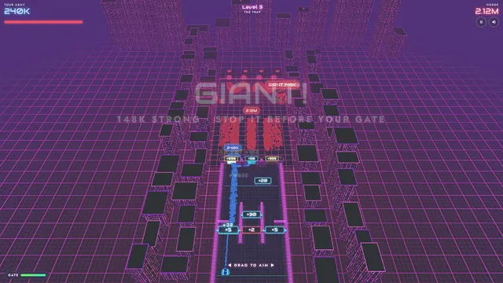
Army floodSandblade Siege
A horde 400,000 strong pours in through its portals and charges your gate, bigger every level, and now and then a giant stomps in. Aim a cannon of riders through ×20 and ×999 gates and mow them down one for one, in 3D.
Drag to aim.
Play
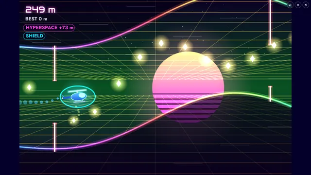
Cave flyerChopper Cave
Fly a glowing helicopter through a neon cave as far as you can. Grab a Shield, Wide Cave or Slow-Mo, and dive through portals into Hyperspace, a synthwave bonus world. Best played with the phone sideways.
Hold to climb, let go to drop.
Play
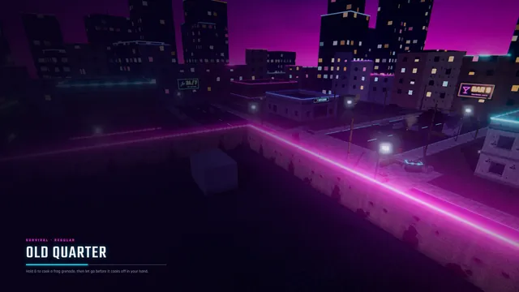
Survival shooterIron Sector
Hold a neon-lit district at night against waves of riflemen, rooftop snipers and juggernauts. Buy weapons and attachments, call in airstrikes. Prefer daylight? Switch to Classic in Settings.
Mouse and keyboard, controller, or touch.
Play